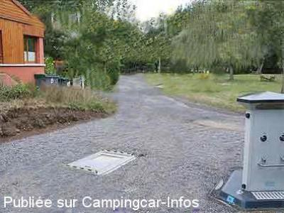

AC = Camping acceptant les camping-cars de :
PAULHAGUET
(N° 165)
Accès/adresse :
6 route d'Esfacy
Camping La Fridière ***
43230 PAULHAGUET
Camping La Fridière ***
43230 PAULHAGUET
Latitude : (Nord) 45.1991° Décimaux ou 45° 11′ 56′′
Longitude : (Est) 3.5208° Décimaux ou 3° 31′ 14′′
Tarif : 2015
Emplacement : 6,60 à 6,80 €
Personne + 12 ans : 3,50 à 3,80 €
Enfant - 12 ans : 2,20 €
Électricité 10 à 16 A : 3,50 €
Animal : 1 €
Taxe de séjour + 13 ans : 0,20 €
Wifi gratuite
Type de borne : RACLET
Services :


Autres informations :
Ouvert du 01/04 au 1/10
45 emplacements
Tél : +33(0)471 766 554
info@campingfr.nl
http://www.campingfr.nl

Le 10/05/2006 par
de
andré araqué
le 09/08/2010 :
Très beau camping avec borne électrique et eau à chaque emplacement.
Très beau camping avec borne électrique et eau à chaque emplacement.
de
Jean Paul FICHAUX
le 10/05/2006 :
J'ai oublié de signaler que les services à la borne coutent 2 Euros
J'ai oublié de signaler que les services à la borne coutent 2 Euros
de
Paulo 43
le 07/05/2006 :
Accueil chaleureux pour ce petit camping sympa en bordure de rivière. Bar, pain, petite restauration.
Proche du village et des commerces. Les camping-cars sont les bienvenus.
A voir....
Accueil chaleureux pour ce petit camping sympa en bordure de rivière. Bar, pain, petite restauration.
Proche du village et des commerces. Les camping-cars sont les bienvenus.
A voir....